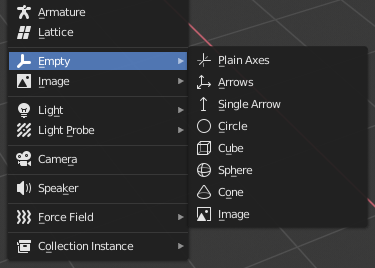

Tùy chỉnh kiểu node bằng hậu tố tên
Nhiều khi, lúc chỉnh sửa một scene, có những tác vụ phổ biến cần thực hiện sau khi xuất:
Thêm phát hiện va chạm cho các đối tượng.
Đặt đối tượng làm navigation mesh.
Xóa các node không dùng trong game engine (như các nguồn sáng riêng dùng cho việc mô hình hóa).
Để đơn giản hóa quy trình này, Godot cung cấp một số hậu tố có thể thêm vào tên đối tượng trong phần mềm mô hình hóa 3D của bạn. Khi import, Godot sẽ phát hiện hậu tố trong tên đối tượng và tự động thực hiện các hành động tương ứng.
Cảnh báo
Tất cả hậu tố mô tả dưới đây có thể dùng với -, $ và _, và không phân biệt chữ hoa chữ thường.
Không sử dụng tính năng này
Nếu bạn không muốn Godot thực hiện bất kỳ hành động nào mô tả dưới đây, bạn có thể đặt tùy chọn import nodes/use_node_type_suffixes thành false. Điều này sẽ tắt mọi hậu tố kiểu node, giữ nguyên kiểu node như tệp gốc chỉ định. Tuy nhiên, hậu tố -noimp vẫn được áp dụng, cũng như các hậu tố không liên quan đến node như -vcol hoặc -loop.
Ngoài ra, bạn có thể hoàn toàn không dùng mọi hậu tố tên bằng cách đặt tùy chọn import nodes/use_name_suffixes thành false. Điều này sẽ khiến mã import scene chung hoàn toàn không xét đến hậu tố tên. Tuy nhiên, mã import dành riêng cho từng định dạng vẫn có thể xét hậu tố tên, chẳng hạn trình import glTF kiểm tra hậu tố -loop.
Tắt các tùy chọn này giúp tệp được import bởi trình chỉnh sửa giống tệp gốc hơn, và giống hơn với việc import tệp lúc chạy. Để có quy trình import hoạt động lúc chạy, cho kết quả dễ đoán hơn và chỉ có hành vi được định nghĩa tường minh, hãy cân nhắc đặt các tùy chọn này thành false và dùng class_GLTFDocumentExtension thay thế.
Xóa node và hoạt ảnh (-noimp)
Các node và hoạt ảnh có hậu tố -noimp sẽ bị xóa khi import bất kể kiểu của chúng là gì. Chúng sẽ không xuất hiện trong scene đã import.
Điều này tương đương với việc bật Skip Import cho một node trong hộp thoại Advanced Import Settings.
Tạo va chạm (-col, -convcol, -colonly, -convcolonly)
Tùy chọn -col chỉ hoạt động với đối tượng Mesh. Nếu được phát hiện, một node va chạm tĩnh con sẽ được thêm vào, dùng cùng hình học với mesh. Điều này sẽ tạo một collision shape dạng lưới tam giác, là lựa chọn chậm nhưng chính xác cho việc phát hiện va chạm. Tùy chọn này thường là thứ bạn cần cho hình học của level (nhưng cũng xem -colonly bên dưới).
Tùy chọn -convcol sẽ tạo một class_ConvexPolygonShape3D thay vì class_ConcavePolygonShape3D. Không giống lưới tam giác có thể lõm, một hình lồi chỉ có thể biểu diễn chính xác hình không có góc lõm nào (kim tự tháp là hình lồi, nhưng một chiếc hộp rỗng là hình lõm). Vì vậy, collision shape lồi nhìn chung không phù hợp cho hình học của level. Khi biểu diễn các mesh đủ đơn giản, collision shape lồi có thể cho hiệu năng tốt hơn so với collision shape tam giác. Tùy chọn này lý tưởng cho các đối tượng đơn giản hoặc động cần phát hiện va chạm tương đối chính xác.
Tuy nhiên, trong cả hai trường hợp, hình học hiển thị có thể quá phức tạp hoặc không đủ mượt cho va chạm. Điều này có thể gây lỗi vật lý và làm chậm engine một cách không cần thiết.
Để giải quyết vấn đề này, modifier -colonly ra đời. Nó sẽ xóa mesh khi import và tạo một va chạm class_StaticBody3D thay thế. Điều này giúp tách biệt mesh hiển thị và va chạm thực tế.
Tùy chọn -convcolonly hoạt động tương tự, nhưng sẽ tạo một class_ConvexPolygonShape3D bằng cách phân rã lồi (convex decomposition).
Với tệp Collada, tùy chọn -colonly cũng có thể dùng với các đối tượng empty của Blender. Khi import, nó sẽ tạo một class_StaticBody3D với một node va chạm làm con. Node va chạm sẽ có một trong số các hình được định nghĩa sẵn, tùy thuộc vào kiểu hiển thị (draw type) của empty trong Blender:

Chọn kiểu hiển thị cho Empty khi tạo trong Blender
Single arrow sẽ tạo một class_SeparationRayShape3D.
Cube sẽ tạo một class_BoxShape3D.
Image sẽ tạo một class_WorldBoundaryShape3D.
Sphere (và các kiểu khác không được liệt kê) sẽ tạo một class_SphereShape3D.
Khi có thể, hãy cố gắng dùng một vài collision shape nguyên thủy thay vì hình lưới tam giác hoặc hình lồi. Các hình nguyên thủy thường có hiệu năng và độ tin cậy tốt nhất.
Ghi chú
Để dễ nhìn hơn trong trình chỉnh sửa của Blender, bạn có thể bật tùy chọn "X-Ray" cho các empty va chạm và đặt cho chúng một màu riêng bằng cách thay đổi Edit > Preferences > Themes > 3D Viewport > Empty.
Nếu dùng Blender 2.79 trở về trước, hãy làm theo các bước sau: User Preferences > Themes > 3D View > Empty.
Xem thêm
Xem Hình dạng va chạm (3D) để có cái nhìn tổng quan đầy đủ về collision shape.
Tạo Occluder (-occ, -occonly)
Nếu một mesh được import với hậu tố -occ, một node class_occluder3D sẽ được tạo dựa trên hình học của mesh, và nó không thay thế mesh. Một node mesh có hậu tố -occonly sẽ được chuyển thành class_occluder3D khi import.
Tạo VehicleBody (-vehicle)
Một node mesh có hậu tố -vehicle sẽ được import làm con của một node class_VehicleBody3D.
Tạo VehicleWheel (-wheel)
Một node mesh có hậu tố -wheel sẽ được import làm con của một node class_VehicleWheel3D.
Rigid Body (-rigid)
Một node mesh có hậu tố -rigid sẽ được import thành một class_RigidBody3D.
Lặp hoạt ảnh (-loop, -cycle)
Các clip hoạt ảnh trong tệp 3D gốc bắt đầu hoặc kết thúc bằng từ khóa loop hoặc cycle sẽ được import thành một class_Animation của Godot với cờ lặp được bật. Không giống các hậu tố khác mô tả ở trên, hậu tố này không cần dấu gạch ngang.
Trong Blender, điều này yêu cầu dùng NLA Editor và đặt tên Action với tiền tố hoặc hậu tố loop hoặc cycle.
Alpha của material (-alpha)
Một material có hậu tố -alpha sẽ được import với chế độ trong suốt TRANSPARENCY_ALPHA.
Màu đỉnh của material (-vcol)
Một material có hậu tố -vcol sẽ được import với các cờ FLAG_ALBEDO_FROM_VERTEX_COLOR và FLAG_SRGB_VERTEX_COLOR được bật.